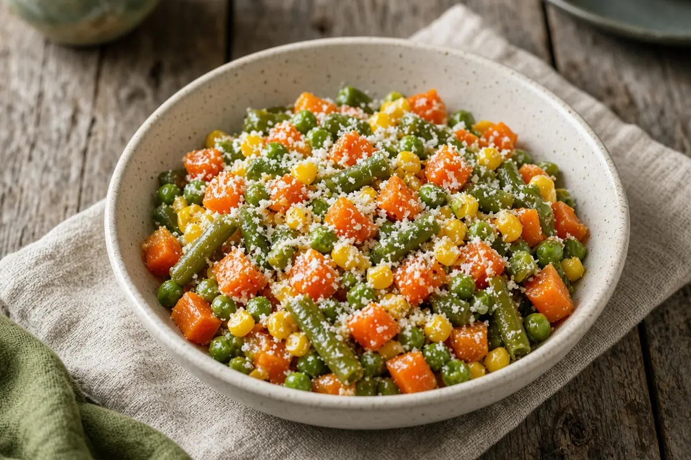

Garlic Butter Mixed Vegetables
A bag of frozen mixed vegetables simmered in broth, then tossed with garlic butter and parmesan. A ten-minute side.

Adapted from Giant Food Stores
4 servings
By
Yield: 4 servings
Prep:
Cook:
Total:
Difficulty: Easy
Ingredients
- 1 (16-oz) bag frozen mixed vegetables
- 1/2 cup vegetable broth
- 1 Tbsp butter
- 1 tsp minced garlic
- 2 Tbsp grated Parmesan cheese
- Pepper, to taste
- 1 Tbsp chopped fresh parsley, for garnish
Instructions
- Combine the mixed vegetables and vegetable broth in a medium saucepan and cook over medium heat, stirring now and then, until heated through, about 7 minutes.
- Drain off the broth.
- Add the butter, garlic, and Parmesan to the pan, season with pepper, and stir until coated.
- Sprinkle with the parsley and serve.
Notes: Use 2 Tbsp butter for a richer side.